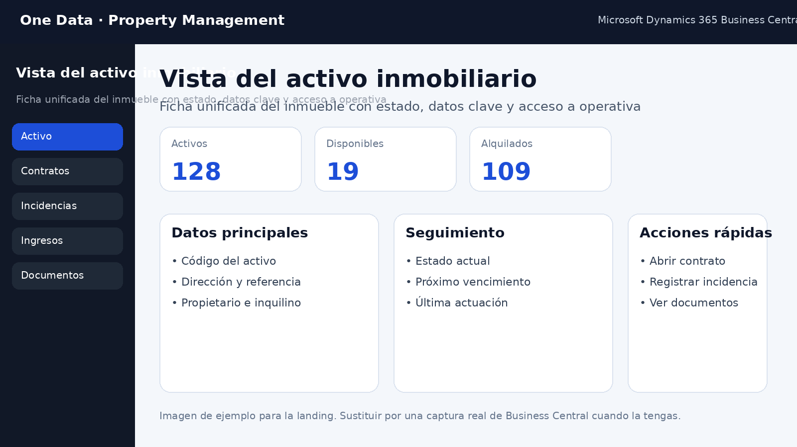
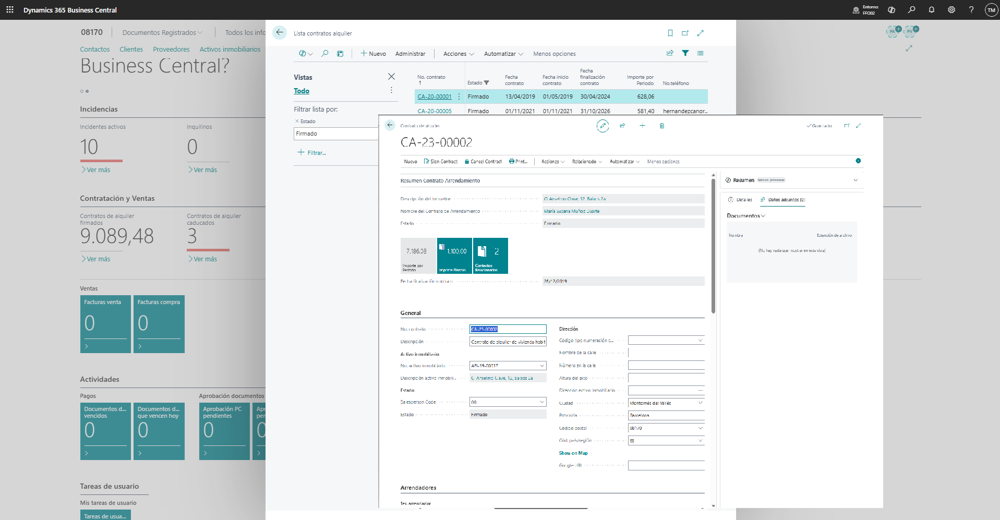

Qué puedes destacar con capturas
Cuando tengas pantallas reales de la extensión, este bloque te ayudará a hacer la página mucho más convincente.
Vista del activo

Muestra la ficha del inmueble o unidad, con su estado, datos principales y acceso a contratos e incidencias.
Gestión contractual

Enseña cómo se visualizan los contratos vigentes, los vencimientos próximos y la relación con el inquilino.
Operaciones e historial

Incluye una captura donde se vea claramente el registro de operaciones realizadas sobre el activo y su seguimiento cronológico.